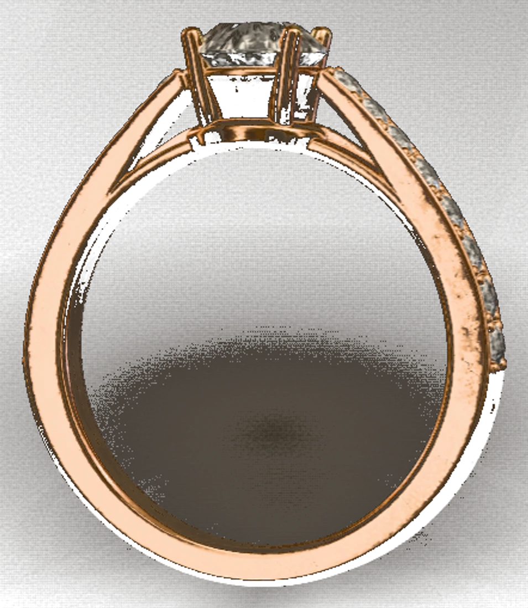

מאוד מרוצים! השירות מדהים! מחיר ומקצועי. שי מקסים ואדיב, מקשיב ומתחשב בכל בקשה. מומלץ בחום!
שי תכשיטי זהב בטבריה — חנות עם מבחר עצום, ומעל כולם לקוחות מרוצים... שירות... איכות... יחס. והכי חשוב — שווה לכל ממש כך... תודה על שירות נפלא 💞🙏
היי, קניתי לפני יומיים שרשרת לבעלי, וברגע שנכנסתי הייתה קנייה. שי הבעלים נתן שירות מסור ועזר לי למצוא בדיוק מה שרציתי. תודה רבה!
נשמח לענות לך ולתת את השירות הטוב ביותר